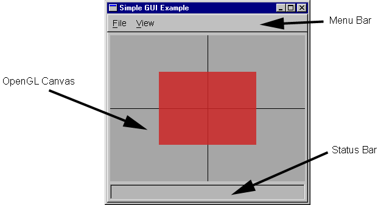

All interactive graphics applications need to create some sort of graphical user interface. While many applications may require a fairly sophisticated interface, there is a large class of applications which can be built with a very simple interface. The libgfx library provides a framework to ease the construction of such simple interfaces.
The kind of application interface supported by the GUI framework is pictured in the following figure:
The application window consists of three primary components:
The code for the application pictured above provides a concrete example of using this GUI framework.
To begin building your GUI application, you'll need to include the GUI framework header:
#include <gfx/gui.h>
The framework itself is packaged as a C++ class named MxGUI.
You create your application by subclassing it and overriding various virtual
methods. You can then create a single instance of this class, which will
represent your application.
For consistency, it is recommended that you name
the derived subclass GUI and its instance gui as in the
following:
class GUI : public MxGUI
{
public:
// Application variables and methods
public:
// Override virtual methods to handle events
};
GUI gui; // Create application instance
Programs based using this framework always use the main() procedure as their entry point, even on Windows systems. Inside this main procedure, you should perform this general sequence of operations:
The MxGUI::initialize method must be called to initialize the GUI framework.
virtual void initialize(int argc, char **argv,
Fl_Menu_Item *layout=NULL, int xw=640, int yw=480);
You should pass to it the argc and argv command-line
variables as passed into main(). The framework will take care of
parsing the command-line and calling the appropriate handlers.
The optional layout argument can be used to specify an initial menu
structure; the default value of NULL directs the framework to use the
default menu layout.
The optional xw and yw arguments specify the desired width
and height (in pixels) of the OpenGL canvas.
The MxGUI framework uses the FLTK Fl::args facility to parse the command line passed to MxGUI::initialize(). For each option on the command line, it invokes the following handler:
virtual int cmdline_option(int argc, char **argv, int& index);
The argc and argv values are the complete array originally
passed to initialize(). The index argument indicates which
element of argv contains the current switch being processed.
This index variable is passed by reference to allow the handler to
consume additional elements of argv by incrementing index.
The handler should return 1 if it handled the switch and 0
otherwise.
Once all options have been processed, the initialization code invokes the following handler for each file listed on the command line.
virtual void cmdline_file(const char *file);
If no files are specified this handler will be invoked with a NULL
value.
The MxGUI framework uses two virtual methods to control drawing in the OpenGL canvas. The first of these is:
virtual void setup_for_drawing();
This method is called whenever the canvas has been reconfigured. Primarily,
this occurs when the canvas has either just been shown on the screen (e.g.,
after creation) or when it has been resized.
Whenever the canvas needs to be repainted, the framework will invoke the handler:
virtual void draw_contents();
You should override this method and place all your drawing code in it.
Interactive applications will typically want to receive mouse events taking place on the OpenGL canvas. The framework classifies mouse events into three types:
virtual bool mouse_down(int *where, int which);
virtual bool mouse_up(int *where, int which);
virtual bool mouse_drag(int *where, int *last, int which);
The where argument is a 2-D array containing the pixel location in
the OpenGL canvas at which the mouse was pointing when the event occurred.
The number of the button involved (either 1, 2, or 3) is passed in the
which argument.
To simplify drag operations, that event handler is also passed the location of
the last received drag event.
All of these mouse handlers should return true if the canvas should be redrawn in response to the event just handled. If the canvas does not need to be updated, they should return false.
Key press events can be received through the virtual function:
virtual bool key_press(int key);
The return value of this function indicates whether the key press event
was consumed by the handler. You should make sure to return
false if you do not use the given key, otherwise keyboard
accelerators for the menu bar will no longer function correctly.
Note that FLTK defines symbolic names for non-ASCII keys. You can also query the state of the modifier keys using the Fl::event_state() function.
A very simple mechanism for supporting animation is also provided by the framework. To take advantage of this, first set the MxGUI instance variable
float default_fps;
to the desired number of frames per second (defaults to 24). The method
void animate(bool will);
can then be used to start and stop animation.
The system works by setting a system timer to go off every 1/fps of a second.
When that timer goes off, the framework will call the handler
virtual void update_animation();
so that the application can update its state appropriately, after which the
framework will invoke the draw_contents() handler to repaint the
canvas. Note that this system makes no effort to guarantee a consistent
update rate.
The default menu bar contains items to toggle animation on and off and to set the desired default_fps value.
Many GUI applications use menu systems to provide the user control over the application. By default, the MxGUI framework creates a very simple menu layout for its applications. This standard menu provides basic features such as saving a snapshot of the OpenGL canvas to an image file, toggling animation, and setting the size of the display canvas. However, the application also has complete freedom to customize the menu system.
The initialize() method accepts an optional argument which specifies the layout of the menu system. This layout is an array of Fl_Menu_Item elements, whose format is described in the FLTK documentation. Passing a menu layout to initialize() will completely replace the default menu structure.
Once an initial menu system has been created, either the default or an application-specific one, additional items can be added at run time. To do this, you can invoke the add() method of the MxGUI::menu_bar object.
The status bar at the bottom of the GUI application can be used to display short textual messages to the user. You can use the following method to print text in the status bar:
int status(const char *fmt, ...);
It accepts argument lists of exactly the same form as the printf
function of the C standard library.